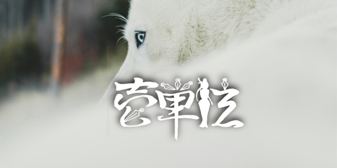

小説執筆 / シナリオ・原作制作
壱単位（いちたんい）と申します。兼業ライトノベル作家、シナリオ・原作作家。
読者をキャラの隣にお招きして世界を感じていただけるような描写を心がけています。
北海道在住。自宅のなかも外も人間より動物のほうが多い環境で暮らしています。
お仕事のご依頼、ご相談はContactよりお気軽にご連絡ください。
第一回Nola原作大賞、株式会社一二三書房さま（コミックノヴァ編集部さま）ご選出にて優秀賞を受賞。ノヴァコミックスさまからのコミカライズに向けて鋭意作業中。
原作・シナリオ担当。第4回「G'sこえけん」音声化短編コンテスト大賞受賞作。天才人形師・ヒスイの手によってつくられたあなたは、身体のすみずみまで……。ASMR音声作品化進行中。
原作・シナリオ担当。第2回「G'sこえけん」音声化短編コンテストボイスドラマ部門優秀賞受賞作。緊張するととんでもないクセを発現してしまう和風美少女、水無月るおん。恋を諦めかけたそのときに……！ CV：島田愛野さま。G'sチャンネル、YouTubeにて無料配信中。

壱単位のほとんどの作品はカクヨムで公開しています。
壱単位へのご連絡、最新の執筆状況や日常のつぶやきはこちらから。